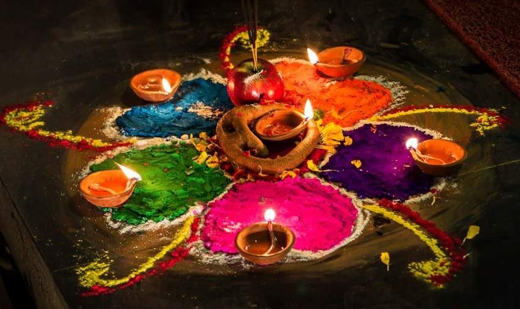
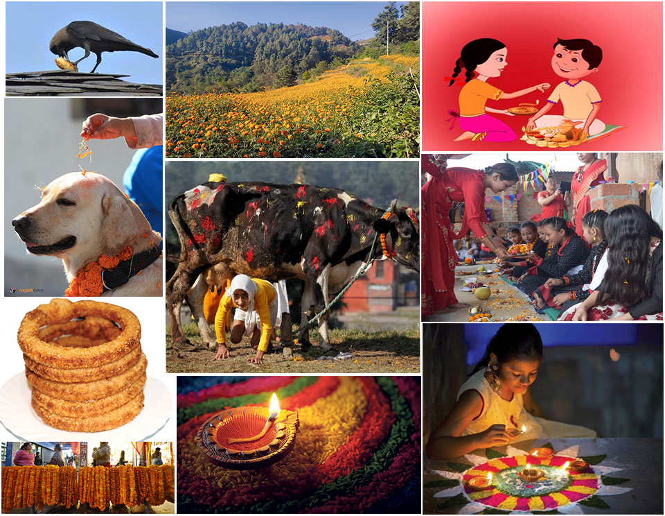

 Tihar is a five-day long festival that takes place 15 days after Dashain celebrations. The festival is celebrated by worshipping crows and dogs on the first two days respectively. On the third day, people worship cows in the morning. While Dipawali (Lighting) is observed in the evening by worshipping the goddess of wealth- Laxmi and lighting candles in the house. Oxen is worshipped on the fourth day and Govardhan Pooja is conducted during the evening.  Newar community, however, celebrates New Year and performs Mha Puja on the fourth day. The last day of Tihar is Bhai Tika (Brother’s Day). It is celebrated by rejoicing the pleasant relationship between the siblings. On this auspicious day, sisters put Tika on their brother’s forehead to wish them longevity and good health.